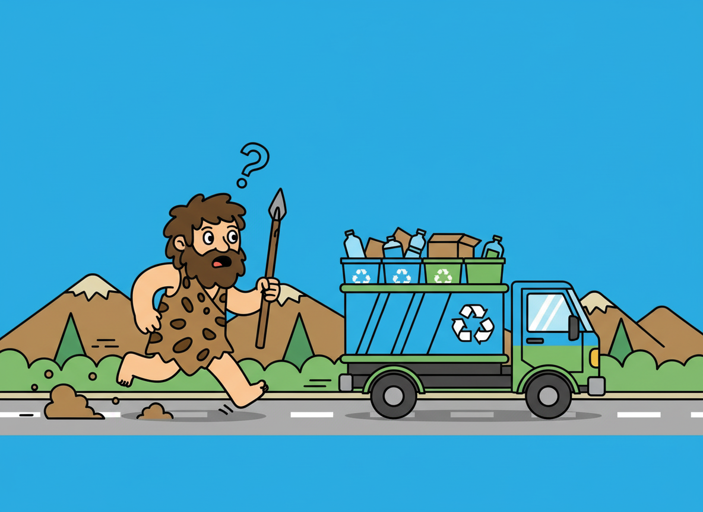
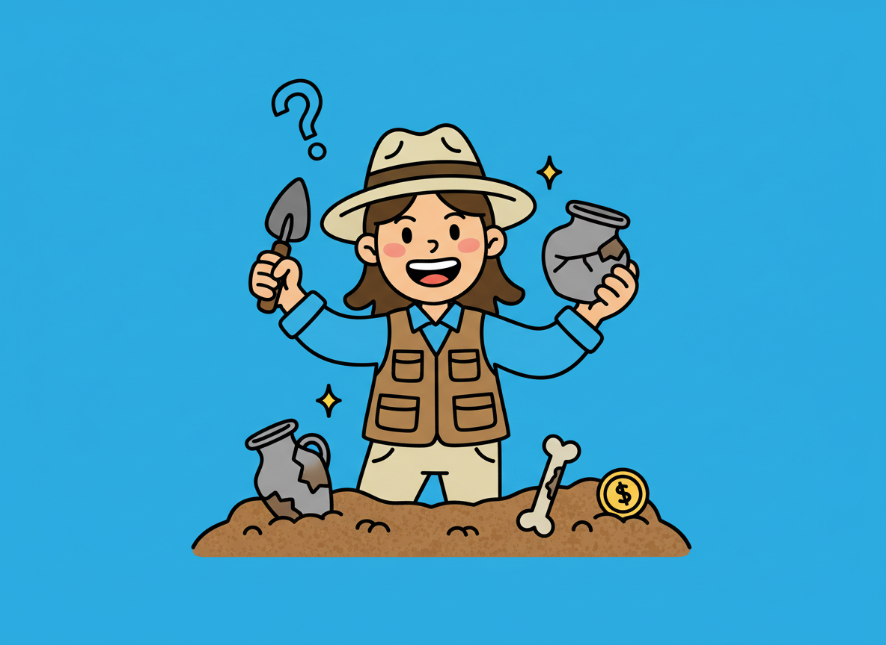
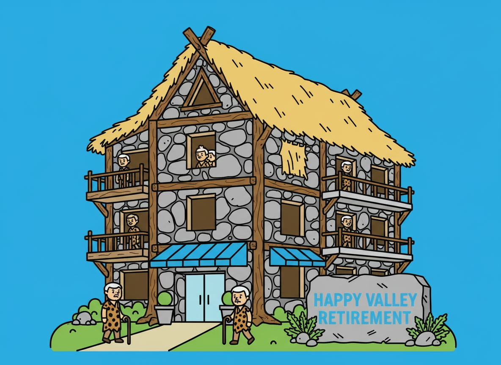

TIDSMASKINE-FEJL
Hulemennesker transporteret til 2025: Teenagere indkaldes til at integrere dem i vores moderne verden
Hulemennesker transporteret til 2025: Teenagere indkaldes til at integrere dem i vores moderne verden
Arkæologer jubler: “Det er som at interviewe vores forfædre”
Forskerholdet beskriver møderne som dybt rørende. De observerer redskabsbrug, sociale mønstre og ritualer på nært hold — noget, der ellers kun kan udledes af fund i jorden. Antropologer understreger behovet for en nænsom tilgang. Alt tyder på, at stenaldergruppen reagerer positivt på roligt miljø, mad og varme, men bliver stressede af støj og fremmede lyde.
“Danmarks første ‘Stenalderdomshjem’ åbner: Et omsorgscenter for mennesker fra en anden tidsalder”
Det nye center, beliggende i en ombygget skovhytte nær Silkeborg, er indrettet med åbne ildsteder, naturmaterialer og uforarbejdede redskaber. “De reagerer langt mere roligt i miljøer, der minder om deres egen tid,” forklarer antropolog Rikke Madsen, der leder projektet. Elektriske installationer er skjult bag vægge, og lyset dæmpes automatisk for at undgå overbelastning.
“Det giver faktisk mening,” siger forskerne
Antropologer forklarer, at fascinationen kan skyldes bilens rytmiske lyd og gentagne bevægelser, som minder om ritualer fra jæger-samlerkulturer. “Og så er selve idéen om at køre rundt og indsamle affald… tja, det kan virke som en form for avanceret jagt,” forklarer forsker i kulturforståelse, Signe Lunding. Sprogforskerne har desuden noteret, at gruppen har udviklet deres første moderne låneord: “GRUM-GRUM”, som tilsyneladende betyder skraldebil — eller måske selve skraldemændenes guddommelige titel.
